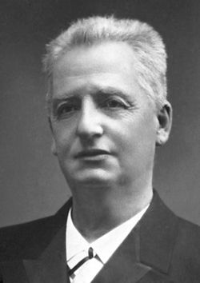

Klas Pontus Arnoldson
Arnoldson, Klas Pontus, 1844–1916, publicist, med religiös och politisk inriktning.
Arnoldson hade ett starkt engagemang i fredsfrågor och tog 1883 initiativ till Svenska freds- och skiljedomsföreningen. Han var ledamot av andra kammaren 1882–87, där han verkade för religionsfrihet och utvidgad rösträtt. Fredsidén utvecklade Arnoldson i boken Seklernas hopp (1901). År 1908 delade han Nobels fredspris med dansken Fredrik Bajer.
Klas Pontus Arnoldson
Källa: Ne.se